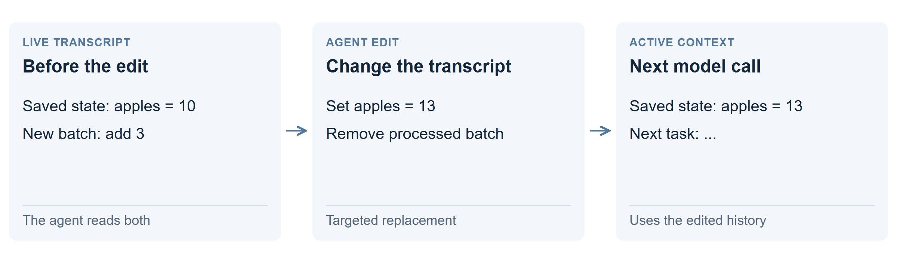

Let the model edit its conversation
Let the model rewrite the conversation it will see next. It can remove a finished step, replace an old value or preserve a useful passage. CLM stands for Context Language Model.

What is actually being edited?
The application exposes the working message history as an editable text file. The prompt tells the model where it is and how to edit it with code. The application turns accepted edits back into messages for the next model call. Read the editing instructions.
This edits prompt text, not the model’s trained weights or GPU cache directly. The server processes the changed prompt into numerical state in GPU memory. Where text, tools and active memory fit.
For our apple ledger, the agent can apply “add 3” to “apples: 10,” replace the saved total with 13, then remove the processed update. The next call sees the new total and the next task.
How is it different?
Ordinary chat keeps appending messages. Periodic summaries replace a broad stretch of history at a threshold. Self-editing lets the agent choose smaller changes as it works. Saving an ordinary notes file alone does not rewrite the live conversation.
What happened in the test?
| Trial | Correct | Time |
|---|---|---|
| 121K ledger | 19/24 | 64 min |
The surrounding software rolled back five batches after they had been delivered. They could not be fetched again. Those missing batches explain the five wrong answers; the agent’s recorded state edits did not cause those misses.
Why use it, and what are the limits?
A compact, current state can let a long task fit a small window. But an edit can remove something needed later, and rewriting early messages can force the cache to recompute later work. Keep original records elsewhere when future questions may need them.
Technical details: the editable mirror
The lab used a 32K budget with external data files forbidden. The transcript mirror was allowed because its contents became the model’s context. The settled loop used code to fold a batch into a marked state block, then replace the raw batch with a short acknowledgment.
Most of the original run’s 233K generated tokens came before that stable loop. Its rollback behavior is a failure of this implementation, not proof that all self-editing loses data. The revised agent protects delivered batches.
Edits, rollbacks and call-by-call evidence · CLM research and comparisons